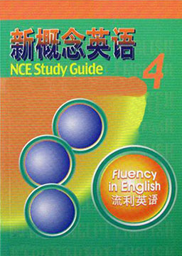
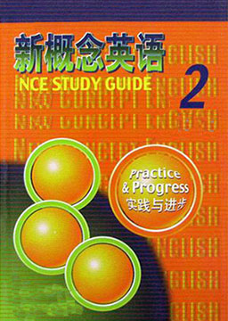
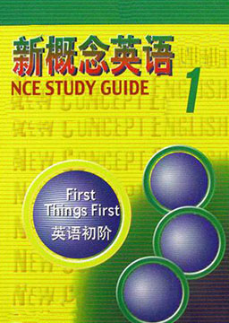

双语小说
收录中英文双语小说300多部，包括世界经典名著、社会小说、悬疑小说等短篇和长篇小说，可按照初中难度、高中难度和大学难度分类阅读，每部小说都有分段中英文对照，点击单词可查看中文翻译。

黑色棉花田 (Roll of Thunder,Hear My Cry)
作者：蜜尔德瑞·泰勒 (Mildred D. Taylor) [美国]
纽伯瑞儿童文学奖金奖作品、美国国家图书奖获奖。赴美读中学的国际生必读书目，美国教育协会推荐童书。内容简介：在民主国家里，你认为以下所叙述的事情能够忍受吗?在公立小学上课，读的是别人十年前不用的破课本；到商店里买东西，老板不理会按规矩排队的你，的反而去招呼插队的客人；在人来人往的大街上，公然被人无理地打耳光。生活在一九二三年的美国黑人，就必须忍受这些不平等的待遇。凯西・罗根，是出生美国内战――也就是奴隶解放战争后约七十年的自由黑人。这个约莫十岁的女孩，是家中的掌明珠，也是一个勇敢女孩。她对于黑人所受到的压榨和不公平，感到十分愤怒和不解。她和她的兄弟们，曾为了报复向他们溅泥水的白人小学校车，在路上挖大洞，使得车子陷入其中不能动弹；她也曾为了一泄被白人女孩打耳光的怨气，声下气地讨白人女孩欢心，然后一举打垮白人女孩……在那个艰苦的年代中，白人的妄自尊大和黑人的不平之鸣，造成社会上的大冲突。白人们无法坐视当年是他们牛马的奴隶，靠着努力拥有合法的土地财产，便 想尽种种卑鄙的手段欺骗、剥削黑人们的血汗成果。有的黑人为了结交白人，不惜成为黑人社会中的叛徒。但是黑人和白人之间的友谊并不牢固一旦遇到利益冲突或惹上麻烦，黑人立刻成了牺牲品。白人将非洲黑人带进美国领土的那一刻起，便为日后的种族问题埋下了恶果。凯西一家的遭遇，只是大时代中的一个小小故事，种族间的冲突，到现在仍然继续在全世界发生。饥饿游戏3: 嘲笑鸟 (The Hunger Games 3: Mockingja)
作者：苏珊·柯林斯 (Suzanne Collins) [美国]
第七十五届饥饿游戏结束，凯特尼斯的家乡，十二区被无情摧毁。打猎伙伴盖尔逃离了虎口，成为了一名勇敢的战士，“恋人”皮塔被凯匹特抓走。传说中的十三区真的存在，那里出现了反抗和新的领导者，革命的序幕正在缓缓拉开。凯特尼斯卷入了起义暴动的旋涡，她被迫成为没有退路的棋子，被迫为许多人的命运负责，她要肩负起唤醒民众和改变帕姆国未来命运的重任，为了正义、自由和皮塔，她必须抛却愤怒和不信任，她必须要成为反搞者的嘲笑鸟，不管要付出多大的代价。残酷的饥饿游戏并没有停止，仍在吞噬着青春和美好。饥饿游戏2: 燃烧的女孩 (The Hunger Games 2: Catching Fire)
作者：苏珊·柯林斯 (Suzanne Collins) [美国]
经历生死的凯特尼斯和皮塔得到了74届饥饿游戏冠军享有的一切待遇，但是两人的关系变得很尴尬，凯特尼斯无法放下昔日男友盖尔，甚至还想要跟他远走高飞。凯特尼斯和皮塔越来越受到人民的欢迎，加上他俩假扮情侣的事情激怒了斯诺总统，他联合新的游戏设计师开展了25年一届的“世界级限赛”，要求抽出12个区的历届男女冠军各一人参加，旨在杀死凯特尼斯。皮塔为了保护凯特尼斯，代替黑密曲参赛，一对“恋人”又踏上了征程。在赛事中二人结交了不同区的盟友，同时皮塔继续对凯特尼斯表露真情，而她对皮塔的态度也有所变化，可惜事情并不像他们想象的一样，等待他们的只有阴谋。饥饿游戏 (The Hunger Games)
作者：苏珊·柯林斯 (Suzanne Collins) [美国]
第七十四届饥饿游戏即将开始。抽签日那天，凯特尼斯的人生彻底改变，她代替被抽中签的妹妹参加比赛，成为竞技场上的一名“贡品”。竞技场是经过人工布置的森林、荒原。竞赛中，猎杀、追踪、饥饿、伪装、智斗等生死存亡的时刻，都被电视现场直播到全国，每个人都必须观看，而且要当成节日一样庆祝。对于凯匹特，这是年度盛会，是一场游戏；对于其他十二区，则是羞辱和折磨。24个“贡品”参加竞赛，只有一人能够存活。在竞技场上，凯特尼斯机缘巧合被塑造成“燃烧的女孩”，与本区的另一个“贡品”皮塔组成“明星恋人”备受瞩目。她很困惑自己与皮塔的关系，她企图拯救其他竞赛者的生命，机智地应对游戏中出现的谜题，使她成了电视观众关注的中心。生死关头，她才发现爱情竟然也可以成为赢的策略。凯特尼斯拒绝向游戏规则屈服，拒绝向死亡屈服，也拒绝向爱情屈服。她的拒绝会带来什么，未来又会怎样呢？坟场之书 (The Graveyard Book)
作者：尼尔·盖曼 (Neil Gaiman) [英国]
在一场杀戮之后，唯一的幸存者，一个十八个月大的婴孩收到冥冥之中的指引，躲开杀手爬进一座坟场，被里面的幽灵收养了，并获得了一个新名字诺伯蒂，一场人生历险由此展开。在这篇诡异的世界里，诺伯蒂遇到了许多奇妙的人，经历了许多有趣的故事，小说透过诺伯蒂的双眼向读者展示了一个尼尔·盖曼式的奇想世界。盖曼自述这个故事源自二十多年前的灵感：“1985年的一天，我看着儿子在家附近的一个墓园里骑他的小自行车，当时一个灵感在我头脑里突然爆发出来，我认为应该重新写一部《丛林之书》，然而用坟场来代替丛林，只不过我用了二十二年才完成这部作品。
所有我们看不到的光 (All the Light We Cannot See)
作者：安东尼·多尔 (Anthony Doerr) [美国]
纽约时报畅销榜第1名 连续65周在榜，2015年普利策奖获奖小说 触动38国读者心弦的迷人之作，美国国家图书奖决选作品。内容简介：世人分为两类，向平凡生活投降的人，和为它英勇而战的人。不要在你活着的时候死去。法国少女玛丽洛尔生活在巴黎，幼年失明后，父亲保护她、训练她，鼓励她勇敢生活下去。1940年，德国入侵，她被迫离家，不久又与父亲骨肉分离，以瘦削的肩膀抵抗纳粹暴政。德国少年维尔纳从小失去双亲，与妹妹在矿区孤儿院相依为命。一心想摆脱底层命运的他，凭借无线电天赋跻身纳粹精英学校，本以为是命运的转折，不料却跌入另一个地狱。战争碾碎了他们的希望，两个陌生人的生命轨迹也意外交汇。当平静的生活成为不可企及的黑暗之光，他们是否有勇气，在死之前，活出生机？
新概念英语4 (New Concept English 4)
作者：路易·亚历山大 (Louis·Alexander) [英国]
体味英语的精髓，涵盖了文化、经济、哲学、艺术、体育、政治、美学、心理学、社会学、教育学、伦理学、天文学等三十多个学科门类，语言文字精美独到，句型结构复杂多变而又不失简洁酣畅。同时诸多文章里蕴涵着深厚的哲思、美学及西方文化中独特的思维方式，这使得该教材成为每一位欲真正掌握英语语言精华的学习者不可多得、不可不学的教材。教师将与你共同体味其中的奥妙。完全掌握后，为雅思级别。
新概念英语3 (New Concept English 3)
作者：路易·亚历山大 (Louis·Alexander) [英国]
掌握英语的关键，着重分析句子之间内在的逻辑关系，使你认识到句型的精炼、优美、实用与可模仿性，从而将其有机地运用于英语写作之中；老师将进一步扩充讲解词汇、短语及语法的实战运用。
新概念英语2 (New Concept English 2)
作者：路易·亚历山大 (Louis·Alexander) [英国]
构建英语的基石，在掌握一册语法知识的基础上，由浅入深、逐步讲解语法要点，使你轻松掌握枯燥的语法；通过对句型想方设法的分析及对词汇、短语的讲解，使你在听、说、读中能真正运用地道的句型。掌握后，可以参加高考一类考试。
新概念英语1 (New Concept English 1)
作者：路易·亚历山大 (Louis·Alexander) [英国]
学习英语的敲门砖，这套经典教材一如既往地向读者提供一个完整的、经过实践检验的英语学习体系，使学生有可能在英语的四项基本技能——理解、口语、阅读和写作方面最大限度地发挥自己的潜能。专为中国的英语学习人士而改编，根据中国读者的需要增添了词汇表、课文注释、练习讲解和课文的参考译文。